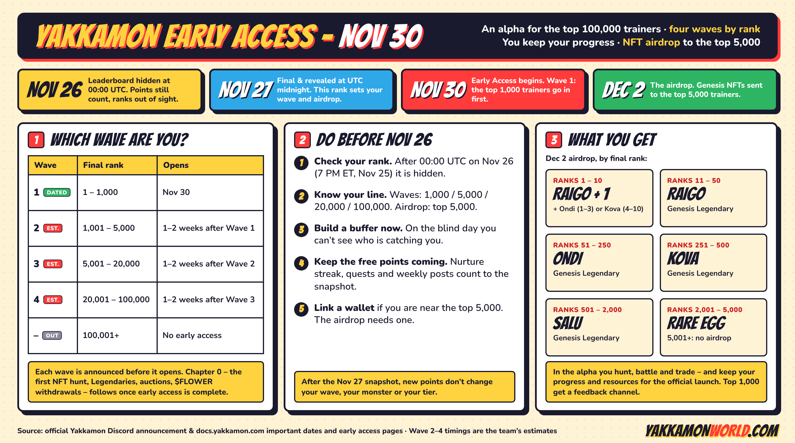

The wait for a date is over. In an announcement to the whole official Discord, Adam confirmed that Yakkamon Early Access begins on November 30, 2026, and gave the three dates around it: the trainer leaderboard is hidden on November 26, finalized and revealed on November 27, and the Genesis NFTs are airdropped to the top 5,000 trainers on December 2.
The official docs were updated to match. Read side by side, the announcement and the Important Dates and Early Access & Airdrop pages do more than fill in a blank: they move the lock much closer to launch than the old schedule had it, put the airdrop after launch instead of before it, and loosen the timing of every wave after the first. If you are sitting near a rank line, you have ten days, and the last one of them is played blind.

The four dates
| Date | What happens | In US Eastern time |
|---|---|---|
| November 26, 00:00 UTC | The trainer leaderboard is hidden. The docs call it going blind: rankings are out of sight for the final day | Wednesday, November 25, 7:00 PM |
| November 27, UTC midnight | The leaderboard is finalized, snapshotted and revealed. The rank you hold here is the rank every reward is calculated on | Thursday, November 26, 7:00 PM (Thanksgiving evening) |
| November 30 | Early Access begins. Wave 1, the top 1,000 trainers, gets in | Monday; no hour published yet |
| December 2 | Genesis NFTs are airdropped to the top 5,000 trainers | Wednesday; no hour published yet |
Two notes on reading that table. The docs give the hide as 00:00 UTC on the 26th, so we read “UTC midnight” on the 27th the same way: the start of the day, exactly 24 hours later. And the docs add that any date without a fixed time will be confirmed in advance, so expect an hour for November 30 before it arrives.
What moved from the old schedule
Until this week every date on the Important Dates page was measured from a launch day nobody had. Now that the days are fixed, several of those distances turn out to be different from what was published.
| Old schedule | Now | |
|---|---|---|
| Early access | November or December, date to be announced | November 30 |
| Leaderboard lock | One week before launch | November 27 — three days before launch |
| Last day of the race | Visible to the end | Hidden from November 26, 00:00 UTC |
| Airdrop | Three days after the lock, ahead of launch | December 2 — five days after the lock, two days after launch |
| Waves 2 to 4 | Waves 2 and 3 a week apart; Wave 4 confirmed closer to launch | Each an estimated one to two weeks after the wave before it, announced before it opens |
| Chapter 0 | One month after early access | Once the early access stage is complete — no date |
The lock moving from seven days out to three is the friendly change: four more days of points count than the old wording promised. The airdrop moving behind launch is the one to notice if you are in Wave 1 — you will be in the game for two days before your Genesis Yakkamon arrives.
The blind day
This is the new mechanic, and it is worth a minute. From 00:00 UTC on November 26 you can no longer see where you stand, and neither can anyone else. Nothing in the announcement or the docs says points stop counting during those 24 hours — the docs say deposits earn points until the leaderboard is finalized, and the snapshot is on the 27th. So the race keeps running; only the scoreboard goes dark.
The effect is on anyone sitting close to a line. On a visible board you can watch the trainer behind you and answer a late push. On a hidden one you cannot, which means the only safe position on November 25 is one with room to spare. A blind final day also takes the edge off last-minute sniping: whoever planned to overtake you by one point at the last minute now has to guess how many points that takes.
Who gets in, and when
Only the top 100,000 trainers on points get early access at all, and they enter in four waves. The rank bands have not changed. Only Wave 1 has a date; the rest are estimates the docs tie to gameplay readiness and capacity.
| Wave | Final rank | Opens | Our arithmetic |
|---|---|---|---|
| Wave 1 | 1 – 1,000 | November 30 | — |
| Wave 2 | 1,001 – 5,000 | Est. 1–2 weeks after Wave 1 | December 7 to 14 |
| Wave 3 | 5,001 – 20,000 | Est. 1–2 weeks after Wave 2 | December 14 to 28 |
| Wave 4 | 20,001 – 100,000 | Est. 1–2 weeks after Wave 3 | December 21 to January 11 |
| — | 100,001+ | No early access | Official launch |
The last column is ours, not the team's: it simply stacks the one-to-two-week estimate on top of November 30. It is useful for one thing, which is seeing how wide the uncertainty gets. A Wave 4 trainer could be in before Christmas or in the second week of January, and the team has said each wave will be announced before it opens, so nobody needs to guess on the day.
Wave 4 used to be the one gap in the schedule (“confirmed closer to launch”). It now has the same estimate as the others, which is a small but real improvement for the 80,000 trainers in it.
What early access actually is
The announcement is direct about it: the team is treating Early Access as an alpha phase and intends to work closely with players on feedback and improvements. That settles the naming question left open on the November 3 dev chat, where “open beta” was used and then withdrawn. The stage that opens on November 30 is called Early Access, and it is an alpha.
What you will be able to do, combining the announcement and the docs:
- Hunt Yakkamon. The Safari Zones post put 31 catchable Yakkamon in the game at Early Access launch.
- Battle. The system described in the official Battles guide.
- Trade. The announcement says trading resources; the docs list marketplace trading among the early access features.
- Move Yakkamon in and out. The docs list depositing and withdrawing Yakkamon, and depositing more $FLOWER.
- Prepare for the Chapter hunts that come later.
What is not open: $FLOWER withdrawals. The docs place those at Chapter 0, along with auctions and the first official NFT hunt.
You keep what you build
This is the line most people were waiting for. There may be tweaks and changes driven by feedback, but otherwise your progress and the resources you collect carry over, and can be used at the official launch — the point where Legendary NFTs are released into the wild to catch and the competitive mechanics switch on. An alpha that keeps its saves is a head start, not a test server. It is also the reason wave order matters: every week earlier is a week more of gathering, leveling and stockpiling that stays with you.
The top 1,000 get a room of their own
The top 1,000, whom the announcement calls Founding Trainers (the docs call Wave 1 the OG Club), receive exclusive access to a feedback channel to help shape the game. For the first week or two they are the only players in it, so the first balance changes will be argued out there. If you are in Wave 2 or later, expect the game you enter to have already been adjusted by what Wave 1 reported.
December 2: the airdrop
The Genesis airdrop goes to the top 5,000 on the final board and needs a linked wallet. The tiers are unchanged from the docs' August 12 update:
| Final rank | Airdrop |
|---|---|
| 1 – 3 | Raigo and Ondi |
| 4 – 10 | Raigo and Kova |
| 11 – 50 | Raigo |
| 51 – 250 | Ondi |
| 251 – 500 | Kova |
| 501 – 2,000 | Salu |
| 2,001 – 5,000 | Rare Egg |
| 5,001+ | No airdrop |
The docs repeat that this airdrop will not run again. One timing wrinkle follows from the new dates: trainers ranked 1,001 to 5,000 receive their NFT on December 2 but do not enter the game until Wave 2 opens, so they will hold it for a week or two before they can use it. What each Genesis Yakkamon does →
After early access: Chapter 0 and the official launch
Chapter 0 is no longer “one month after early access.” The Important Dates page now says it launches once the early access stage is complete, and lists what arrives with it: the first official NFT monster hunt, the first batch of Legendaries, auctions and $FLOWER withdrawals. If all four waves have to be in first, our wave arithmetic above puts that no earlier than late December and plausibly into January — our reading, not a date from the team.
The docs also say players who only join at Chapter 0 can catch up with enough effort, which is a fair summary of the whole design: early access is a head start that can be closed, not a wall.
The announcement closes by promising more campaigns, weekly streams and more detail on the official launch from here on.
What to do in the next ten days
- Look up your rank today, and again on November 25 before 7:00 PM Eastern. After that it is hidden.
- Know your line. Waves break at 1,000, 5,000, 20,000 and 100,000. The airdrop breaks at 3, 10, 50, 250, 500, 2,000 and 5,000.
- Build a buffer before the board goes dark, not during. Points still count on the blind day, but you will be spending them without knowing whether you need to.
- Keep the free points coming. Daily egg nurturing and its streak, quests and the weekly posts all count until the snapshot. The free-to-play route →
- Remember the referral rules. Referral points are provisional until the final review, so a rank propped up by unverified referrals can drop at finalization.
- Link a wallet if you are near the top 5,000. The airdrop needs one.
- If you are in Wave 1, clear some time for the week of November 30. The feedback channel is where the first changes get decided.
What is still open
- The hour on November 30 and on December 2.
- The dates for Waves 2, 3 and 4 — estimates only, each to be announced.
- The Chapter 0 date, now tied to the end of the early access stage.
- What “tweaks and changes” can touch. Progress and resources are kept; whether balance changes can revalue what you stockpiled is not addressed.
- When trainer numbers appear. The docs say they are revealed shortly before early access; the natural moment is the November 27 reveal, but that is not stated.
- When the Monster Egg from sign-up and the weekly reward-track items can be claimed for waves that enter later.
What we changed on the site
The dates are now on the Home page milestone card and in the Important Dates table on the Early Access page, and the FAQ, the gameplay quick reference, site search and the chatbot have been updated to match. Older articles keep their original wording, with a note pointing here where the schedule they describe has been replaced.
Read next
- Important Dates — the full schedule on the Early Access page
- The Leaderboard Guideline — every way points are earned before the lock
- You’re in the Grass Now — what hunting looks like on day one
- Battles Explained — the system you will be testing
- The Official Roster — the 38-entry dex, including the Genesis six in the airdrop
- The November 3 Dev Chat, Graded — what the team said two weeks before the date landed
- FAQ: launch and early access